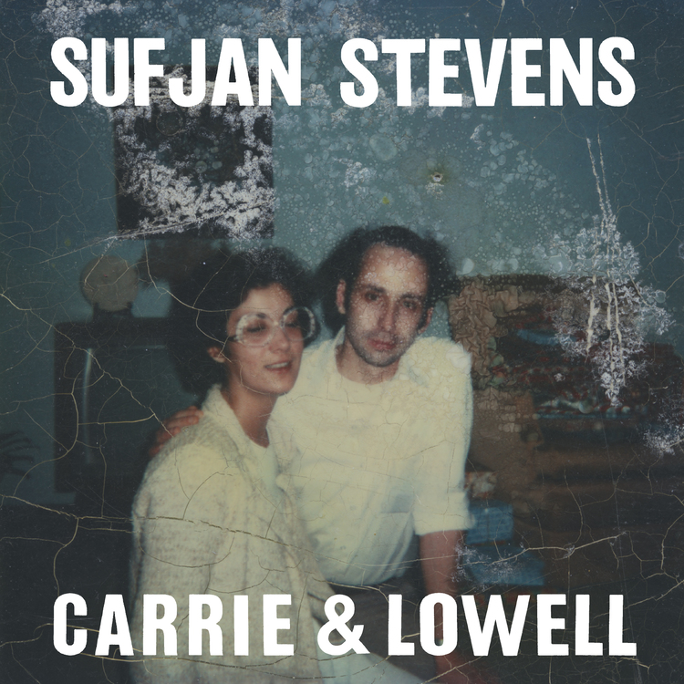
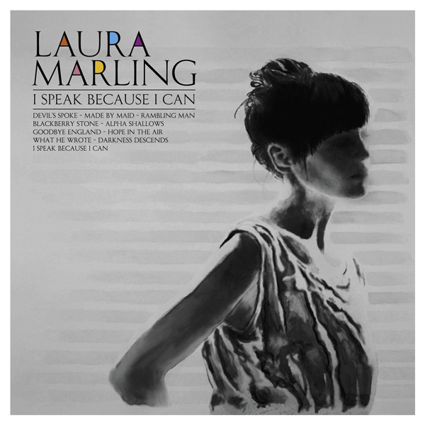

We've come a long way in the past few weeks, and if you've visited the site before, hopefully you'll find that this recent renovation reflect this fact.
We were asked to reflect on the refactoring process of our site. The good news is, I didn't struggle too much getting the site to how it is now, sans Bootstrap or Jekyll. Though not quite at the stage of mobile-friendly, I think I did a pretty good job capturing a relatively responsive design on other devices. Truth be told, the past 6 weeks have been pretty bootstrap-heavy for me. I'd been commissioned to do some work for a client in New York, where I helped get his set up with a static, but modern landing page for his company, bVivid. Come check out the work I did at bvivid.com
Taking on the added responsibility of making someone's website from scratch proved challenging through the weeks of this off-site experience, but incredibly useful. I feel much, MUCH more comfortable with html and CSS, as well as the bootstrap web framework. The biggest challenge with designing a website is the starting point. I'm proud of the work I've done, and for the first time in my tech-life, I have something to show for it!
Taking a break from bootstrap to work on my site proved very fun. Still a bit of work to do with perfecting the design, but thanks for checking it out regardless! Now, on to more pressing matters:
We've spent the better part of 9 weeks working with code, and I've been required to write two blog posts a week about it. Given that I just did a rehash of my site, I figured it might be a good idea *not* to feature a coding blog post on the front page to start. Sometimes a good break is most needed. Instead I've decided that it would be a good idea to shamelessly talk about folk music.
I'm a sucker for good folk. I've noticed that many choose to listen to more upbeat tunes while they study or work, but I've found that the softer stuff helped me to focus more than the loud stuff. It's entirely possible that this could be a reflection of my inherently somber nature -- after all, folk music isn't necessarily a happy affair. That being said, it's generally pretty beautiful and makes for a good backdrop to an otherwise studious evening.
So, if you're at all like me and enjoy a good, slow ensemble to your frantic coding mishaps, I'd recommend taking a look at the following records, as you should find them just right to capture that mood:
Starting with the absolutely most depressing, Carrie and Lowell is a recently released album, the latest addition to Sufjan Steven's excellent body of work. The music in this record takes a decidedly darker turn from his earlier work, however; gone are the days of the vibrant flutters in Michigan and Illinois, the bombastic glitchiness of Enjoy Your Rabbit. This is Sufjan at his most stripped down. With minimal instrumentation and lyrics that seem to tell us more about this artist than we've heard before, it provides a great means of introspection as well as a soft backdrop on a quiet evening.
Granted, this record is not for everyone. When I say it's an extremely dark record, I do not exaggerate -- this can either make someone feel calm (like myself) or bring one to the verge of tears, depending on your mood and current situation. But it is, without a doubt, an incredibly beautiful album.
Along similar lines as the previous album, I Speak Because I Can is a record I've grown to love over the last few years I've had it with me. Though not as dark as a sad Sufjan Album, Laura Marling evokes a deep empathy and sadness when she sings -- as well as a solid technical guitar accompaniment -- reminiscent of Joni Mitchell. Her lyrics pierce the soul, with songs like 'Rambling Man' and 'Made by Maid' bringing to life a rich narrative. Laura Sings in a way that feels much older than she actually is -- there is a wisdom in her voice, and it's not difficult to be entranced by that wisdom as she carries you through this record effortlessly.